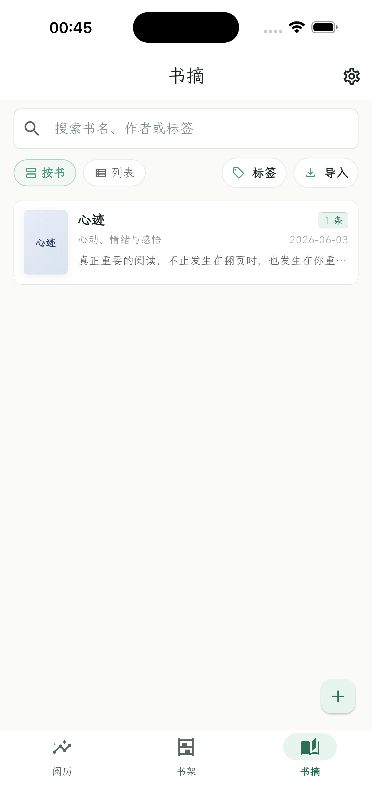
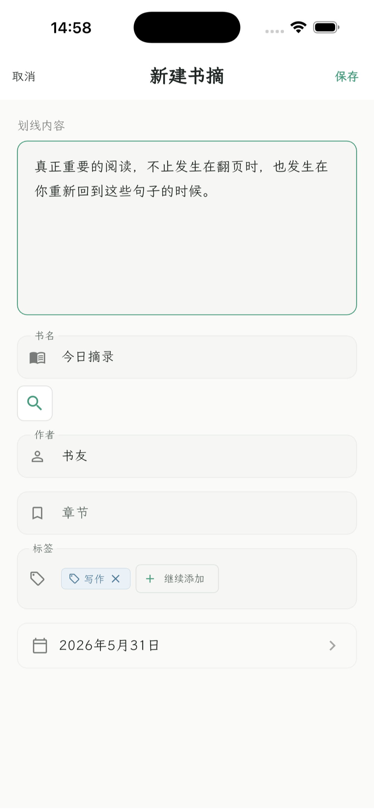
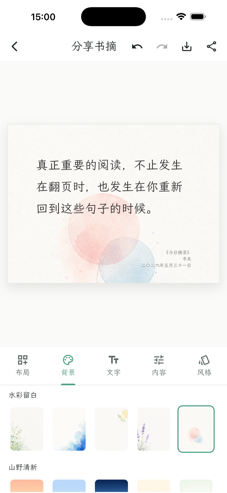

书架
同步微信读书书籍、文章、有声书和阅读进度，让读过和正在读的内容有一个统一入口。
Moka 0.4
把心动的句子，留成自己的阅读资料库。
同步微信读书书架与笔记，也可以手动记录一段“心迹”。墨卡把书、划线、想法、标签和阅读进度收进本地资料库，再帮你复盘、搜索和生成分享卡片。


For readers
墨卡不是新的阅读平台，而是阅读之后的工作台。你可以把微信读书里的书架、划线和想法同步到本地，也可以把当下的一点心动、一种情绪、一段感悟手动记下来。
同步微信读书书籍、文章、有声书和阅读进度，让读过和正在读的内容有一个统一入口。
把划线、想法、评论和手动摘录沉淀到本地，支持按书、列表、标签和关键词整理。
不属于某一本书的文字，也可以默认归入“心迹”。这个名称可以在设置里改，但不会让内容无处安放。
为喜欢的片段选择布局、背景、字体和风格，导出适合保存或分享的图片。
Workflow
连接微信读书后，墨卡会按当前本地状态生成导入预览。已经在本地删除的内容，如果远端仍然存在，再次同步时会像普通新增一样出现，逻辑更直观。
Share
墨卡保留轻量的排版编辑能力：调整布局、背景、文字和风格，导出一张不喧宾夺主的分享图。

Local first
本地书摘、标签、分享样式和导出图片默认保存在你的设备上。微信读书同步、智能整理和版本更新检查都只在你主动配置或触发相关功能时进行。
Availability
Android 官方 APK 已通过本站和 GitHub Releases 发布，并支持在 App 内检查新版本。iPhone 版准备上架 App Store，并计划开放给搭载 Apple silicon 的 Mac 使用。